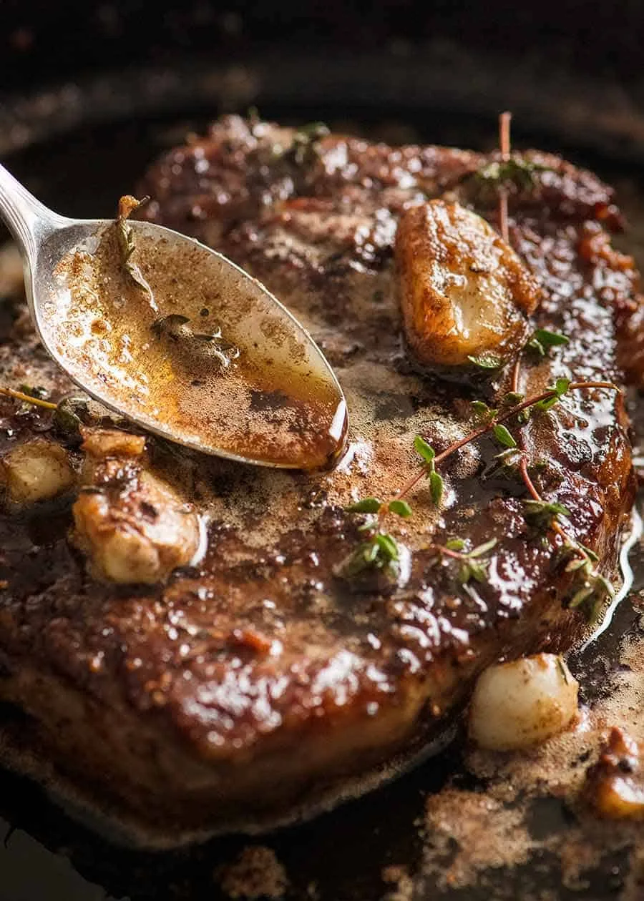

Home
Steak Recipe

"Here’s how to cook steak like a chef – pan seared and basted with garlic thyme butter! It’s dramatic, simple cooking at its best, you’ll look like a total pro and feel like you’re dining at the best steakhouse in town….."
Ingredients
- Thickish cut steak – no more than 2.5cm/1″ thick, because we want to cook this entirely on the stove
(thicker cuts need to be finished in the oven). Ideal steaks: boneless rib eye / scotch fillet,
porterhouse / New York, T-bone. Grade: takes high quality steak over the top amazing, really elevates economical steak.
-
Butter, garlic and fresh thyme
Steps
- Bring to room temp! This makes an amazing difference to cooking through
evenly rather than ending up with a thick overcooked band in order for the very centre to be cooked to your liking;
- Pat dry and season the steak generously with salt and pepper – this helps form that amazing crust we all know and love about great steaks;
- Get your skillet SMOKING HOT before putting the steak in – again, for the crust
- WARNING: The butter will sputter when you add the thyme, so stand back!
- Take the steak off the stove BEFORE your desired internal temperature (see chart below) because the internal temperature will continue to rise as it rests;
and REST your steak for 5 to 10 minutes so it sucks its own juices back in and the fibres relax. This is a must-do step for any protein you cook hard and fast!